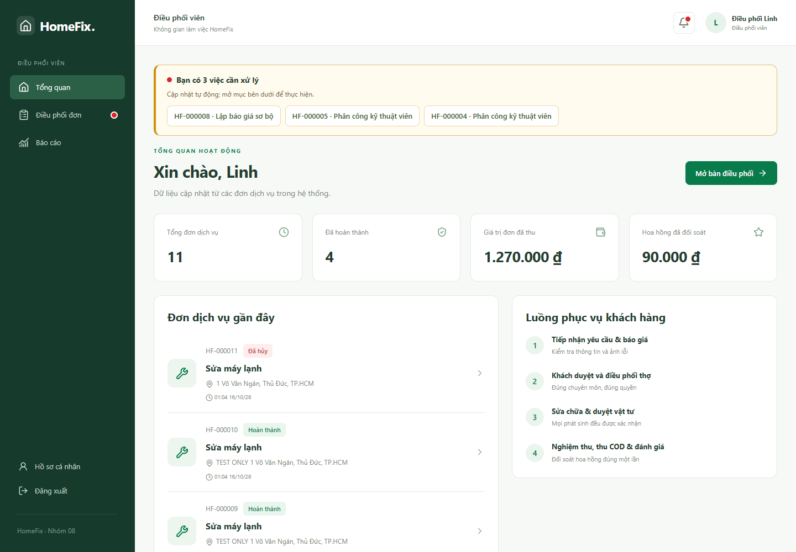

Điều phối viên: tiếp nhận và phân công
Tiếp nhận và lập báo giá
- Mở đơn chờ tiếp nhận, đọc mô tả, dịch vụ, địa chỉ và lịch hẹn.
- Chọn Lập báo giá sơ bộ. Nhập Chẩn đoán sơ bộ và kiểm tra các khoản phí.
- Gửi báo giá; theo dõi khách xác nhận. Không phân công trước khi khách đồng ý.
Phân công kỹ thuật viên
- Lọc đơn Chờ phân công, mở chi tiết.
- Chọn Phân công kỹ thuật viên. Chỉ chọn trong danh sách đủ điều kiện theo dịch vụ/khu vực và tình trạng làm việc.
- Xác nhận lệnh; theo dõi Chờ thợ nhận rồi Thợ đã nhận.
- Nếu thợ từ chối hoặc lệnh hết hạn, tải lại trạng thái và thực hiện phân công lại theo lựa chọn cho phép.
Nếu không có thợ phù hợp, kiểm tra chuyên môn, khu vực, sẵn sàng, số dư và tài khoản hoạt động. Không sửa CSDL trực tiếp để bỏ qua điều kiện. Nếu đơn đang được người khác cập nhật, tải lại trước khi tiếp tục.


Không gian làm việc của điều phối viên — bấm ảnh để xem kích thước gốc.